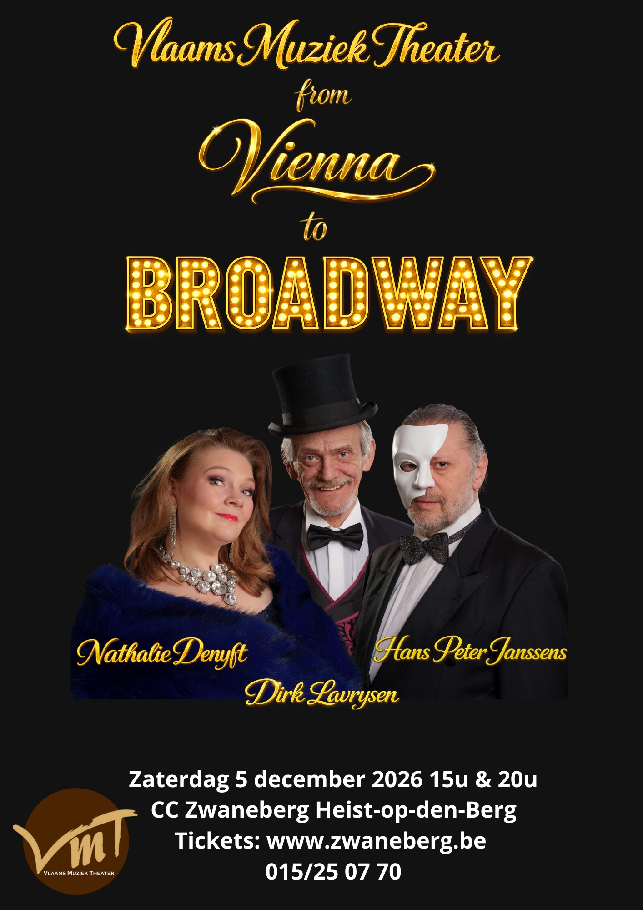

Bestel nu je kaarten!Geschiedenis VMT.
Vlaams Muziek Theater kent zijn oorsprong meer dan 50 jaar geleden onder de naam H.O.K. (Heistse
Opperette Kring). Een groep enthousiaste muziekliefhebbers geloofde in de kracht van kwalitatieve
operette en legde daarmee de basis voor wat zou uitgroeien tot een begrip in operetteminnend
Vlaanderen.
Doorheen de jaren ontwikkelde het gezelschap zich tot het Vlaams Muziek Theater, bekend om zijn
producties vol klasse, stijl en artistieke kwaliteit.
Het VMT bracht volks operettegenot op hoog niveau en was een graag geziene gast in culturele centra
en schouwburgen door heel Vlaanderen.
Het succes van het gezelschap was te danken aan de inzet van talloze medewerkers, zowel voor als
achter de schermen: decorbouwers, kostuumverantwoordelijken, toneelmeesters, koorleden, dansers,
professionele solisten en orkestleden. Samen zorgden zij decennialang voor onvergetelijke producties
en duizenden tevreden toeschouwers.
Na meer dan vijftig jaar aan het roer te hebben gestaan, gaf de oprichter en bezieler, Bert Slaets,
in 2025 de fakkel door aan Frank Boonen, die sinds 2015 reeds instond voor de muzikale leiding van
het gezelschap. Met respect voor de rijke traditie en een blik op de toekomst zet hij het werk van
zijn voorganger verder.
Door de steeds stijgende productiekosten is het niet langer mogelijk om de jaarlijkse grootschalige
operettetournee in Vlaanderen te organiseren. Toch blijft het Vlaams Muziek Theater actief en wil
het zijn rijke erfgoed levend houden met concerten en muzikale producties die het publiek laten
genieten van de mooiste melodieën uit de operette, musical en licht klassiek repertoire.
Het dagelijks bestuur.
- Frank Boonen: voorzitter - muzikale leiding
- Henny Brems - administratie
- Stefanie Roelants - koorlid
- Stan Geerts - decor
- Mia Geerts - kostuumverantwoordelijke
- Myriam Decock - koorlid
- An Verbeeck - webmaster, sociale media
- An Janssens - koorleiding
CONCERTEN.
CONTACT
Frank Boonen - frank@vmt.be - +32 477 27 55 06
adres: V.M.T.
Trampad 3 bus 9
2220 Heist-op-den-Berg